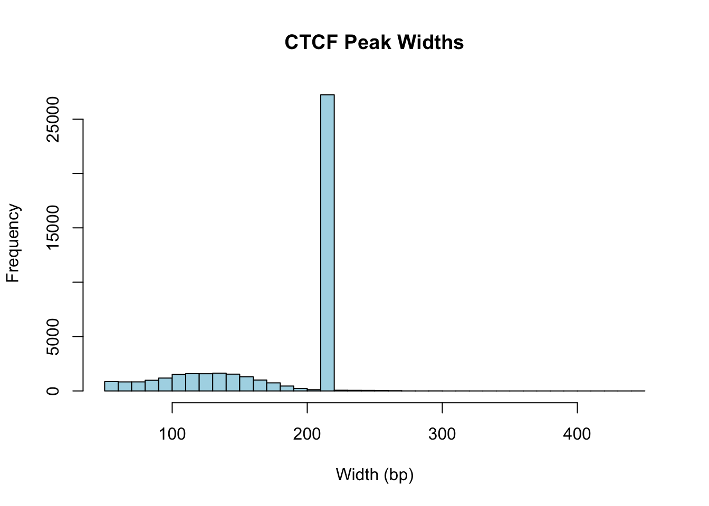
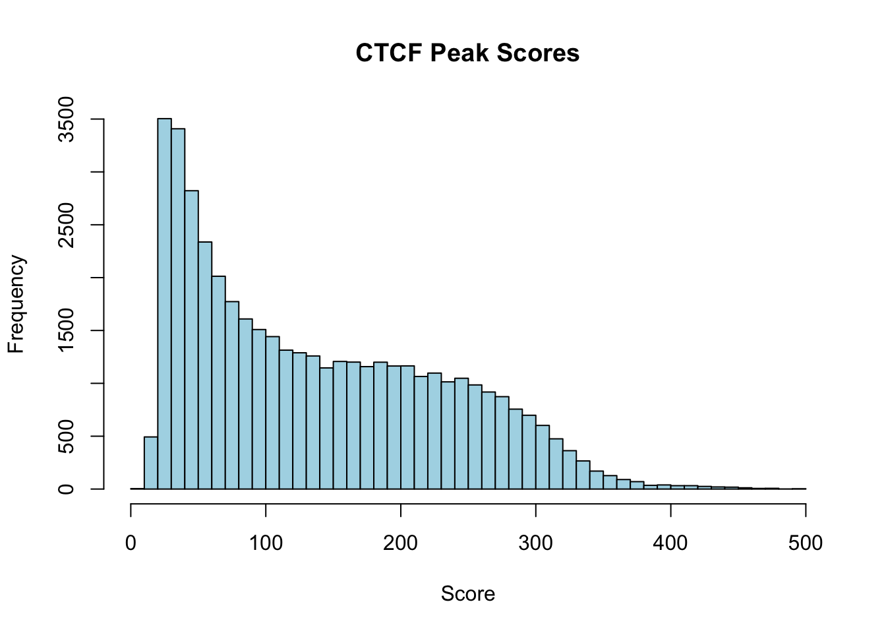
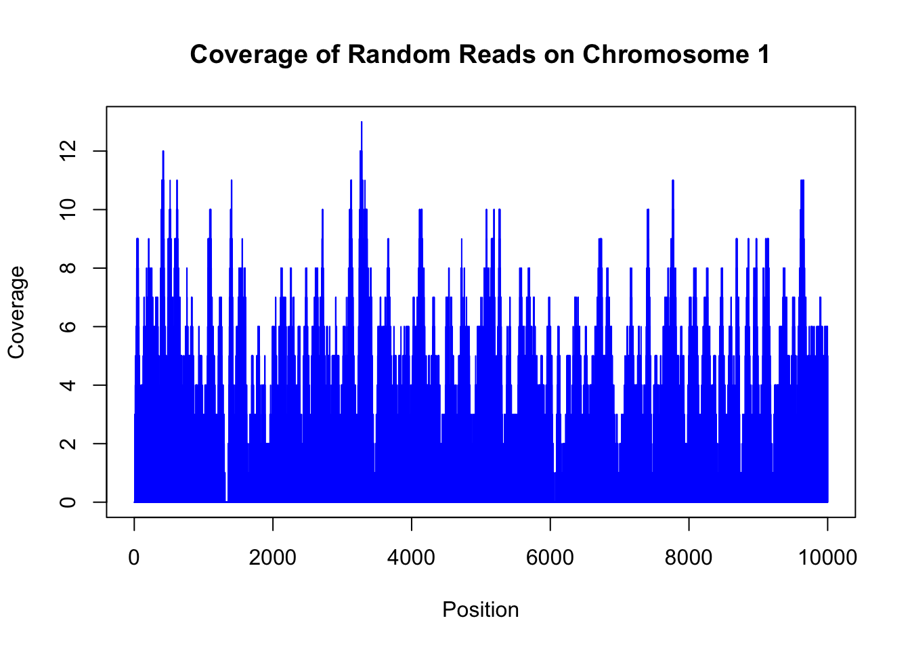
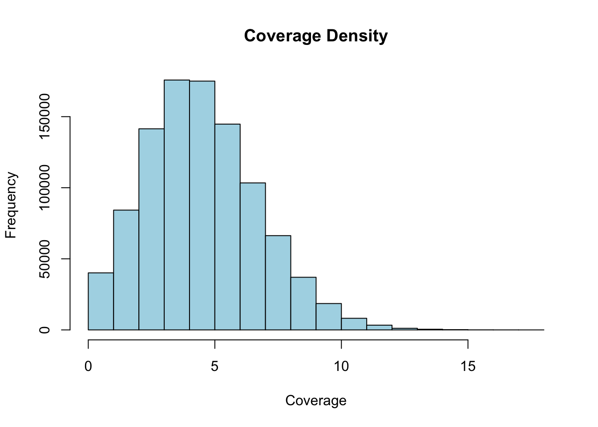

# Load required libraries
library(rtracklayer)
library(GenomicRanges)
library(ggplot2)
library(dplyr)
# Set up plotting theme
theme_set(theme_minimal())24 Genomic Ranges Introduction
24.1 Introduction
Genomic ranges are fundamental data structures in bioinformatics that represent intervals on chromosomes. They are essential for analyzing ChIP-seq peaks, gene annotations, regulatory elements, and other genomic features. In this tutorial, we’ll explore the BED file format and demonstrate practical genomic range operations using R’s rtracklayer package.
This tutorial will cover:
- Understanding the BED file format
- Loading genomic ranges from BED files
- Basic exploration of genomic ranges
- Accessing and manipulating genomic coordinates
24.2 The dataset
We’ll use CTCF ChIP-seq peak data from the ENCODE project. CTCF (CCCTC-binding factor) is a key architectural protein that helps organize chromatin structure. The data is available in BED format, which we will load and analyze. Each peak represents the results of a ChIP-seq experiment, indicating regions where CTCF binds to DNA. The sample was sequenced, aligned, and peaks were called using standard ChIP-seq analysis pipelines. The peaks are stored in a BED file, which we will import into R for analysis.
24.3 The BED File Format
The Browser Extensible Data (BED) format is a standard way to represent genomic intervals. BED files are tab-delimited text files where each line represents a genomic feature.
24.3.1 BED Format Structure
The BED format has several required and optional fields:
Required fields (BED3):
- chrom: Chromosome name (e.g., chr1, chr2, chrX)
- chromStart: Start position (0-based, inclusive)
- chromEnd: End position (0-based, exclusive)
Optional fields:
- name: Feature name/identifier
- score: Score (0-1000)
- strand: Strand (+ or - OR ’*’)
- thickStart: Start of thick drawing
- thickEnd: End of thick drawing
- itemRgb: RGB color values
- blockCount: Number of blocks
- blockSizes: Block sizes
- blockStarts: Block start positions
24.3.2 Key Concepts
- 0-based coordinate system: BED uses 0-based coordinates where the first base is position 0
- Half-open intervals: chromStart is inclusive, chromEnd is exclusive
- Width calculation: Width = chromEnd - chromStart
Example BED entry:
chr1 1000 2000 peak1 500 +This represents a feature named “peak1” on chromosome 1, from position 1000 to 1999 (width = 1000 bp).
24.4 Loading Required Libraries
24.5 Loading CTCF ChIP-seq Data
We’ll work with CTCF ChIP-seq peak data from the ENCODE project. CTCF (CCCTC-binding factor) is a key architectural protein that helps organize chromatin structure.
# URL for the CTCF ChIP-seq BED file
bed_url <- "https://www.encodeproject.org/files/ENCFF960ZGP/@@download/ENCFF960ZGP.bed.gz"
# Let's first load this file using readr::read_table to check its structure
ctcf_peaks_raw <- readr::read_table(bed_url, col_names=FALSE)
── Column specification ────────────────────────────────────────────────────────
cols(
X1 = col_character(),
X2 = col_double(),
X3 = col_double(),
X4 = col_character(),
X5 = col_double(),
X6 = col_character(),
X7 = col_double(),
X8 = col_double(),
X9 = col_double(),
X10 = col_double()
)# Display the first few rows of the raw data
head(ctcf_peaks_raw)# A tibble: 6 × 10
X1 X2 X3 X4 X5 X6 X7 X8 X9 X10
<chr> <dbl> <dbl> <chr> <dbl> <chr> <dbl> <dbl> <dbl> <dbl>
1 chr2 238305323 238305539 . 1000 . 7.70 -1 0.274 108
2 chr20 49982706 49982922 . 541 . 8.72 -1 0.466 108
3 chr15 39921015 39921231 . 672 . 9.08 -1 0.547 108
4 chr8 6708273 6708489 . 560 . 9.86 -1 0.662 108
5 chr9 136645956 136646172 . 584 . 10.2 -1 0.751 108
6 chr7 47669294 47669510 . 614 . 10.5 -1 0.807 108Bioconductor’s rtracklayer package provides a convenient way to import BED files directly into R as GRanges objects, which are optimized for genomic range operations. We’ll use this package to load the CTCF peaks data.
# Load the BED file using rtracklayer
ctcf_peaks <- rtracklayer::import(bed_url, format="narrowPeak")Let’s take a look at the loaded CTCF peaks data. The ctcf_peaks object is a GRanges object that contains genomic ranges representing the CTCF ChIP-seq peaks.
ctcf_peaksGRanges object with 43865 ranges and 6 metadata columns:
seqnames ranges strand | name score
<Rle> <IRanges> <Rle> | <character> <numeric>
[1] chr2 238305324-238305539 * | <NA> 1000
[2] chr20 49982707-49982922 * | <NA> 541
[3] chr15 39921016-39921231 * | <NA> 672
[4] chr8 6708274-6708489 * | <NA> 560
[5] chr9 136645957-136646172 * | <NA> 584
... ... ... ... . ... ...
[43861] chr11 66222736-66222972 * | <NA> 1000
[43862] chr10 75235956-75236225 * | <NA> 1000
[43863] chr16 57649100-57649347 * | <NA> 1000
[43864] chr17 37373596-37373838 * | <NA> 1000
[43865] chr12 53676108-53676355 * | <NA> 1000
signalValue pValue qValue peak
<numeric> <numeric> <numeric> <integer>
[1] 7.70385 -1 0.27378 108
[2] 8.71626 -1 0.46571 108
[3] 9.07638 -1 0.54697 108
[4] 9.86234 -1 0.66189 108
[5] 10.15488 -1 0.75082 108
... ... ... ... ...
[43861] 478.640 -1 4.87574 124
[43862] 480.183 -1 4.87574 141
[43863] 491.081 -1 4.87574 116
[43864] 491.991 -1 4.87574 127
[43865] 494.303 -1 4.87574 126
-------
seqinfo: 26 sequences from an unspecified genome; no seqlengthsThe ctcf_peaks object now contains the genomic ranges of CTCF peaks, including chromosome names, start and end positions, and additional metadata such as peak scores and strand information.
24.6 Understanding GRanges Objects
To get information from a GRanges object, we can use various accessor functions. For example, seqnames() retrieves the chromosome names, start() and end() get the start and end positions, and width() calculates the width of each peak.
# Accessing chromosome names, start, end, and width
length(ctcf_peaks) # Total number of peaks[1] 43865seqnames(ctcf_peaks) # Chromosome names (or contig names, etc.)factor-Rle of length 43865 with 41566 runs
Lengths: 1 1 1 1 1 ... 1 1 1 1 1
Values : chr2 chr20 chr15 chr8 chr9 ... chr11 chr10 chr16 chr17 chr12
Levels(26): chr2 chr20 chr15 ... chr1_KI270714v1_random chrUn_GL000219v1[1] 238305324 49982707 39921016 6708274 136645957 47669295[1] 238305539 49982922 39921231 6708489 136646172 47669510[1] 216 216 216 216 216 216What is the distribution of peak widths? We can visualize this using a histogram.
# Create a histogram of peak widths
hist(width(ctcf_peaks), breaks=50, main="CTCF Peak Widths", xlab="Width (bp)", col="lightblue")
The “metadata” part of a GRanges object can be accessed using the mcols() function, which returns a data frame-like structure containing additional information about each genomic range.
mcols(ctcf_peaks)DataFrame with 43865 rows and 6 columns
name score signalValue pValue qValue peak
<character> <numeric> <numeric> <numeric> <numeric> <integer>
1 NA 1000 7.70385 -1 0.27378 108
2 NA 541 8.71626 -1 0.46571 108
3 NA 672 9.07638 -1 0.54697 108
4 NA 560 9.86234 -1 0.66189 108
5 NA 584 10.15488 -1 0.75082 108
... ... ... ... ... ... ...
43861 NA 1000 478.640 -1 4.87574 124
43862 NA 1000 480.183 -1 4.87574 141
43863 NA 1000 491.081 -1 4.87574 116
43864 NA 1000 491.991 -1 4.87574 127
43865 NA 1000 494.303 -1 4.87574 126The mcols() function returns a data frame-like structure containing additional information about each genomic range, such as peak scores and strand orientation. This metadata can be useful for filtering or annotating peaks.
mcols(ctcf_peaks)[1:5, ]DataFrame with 5 rows and 6 columns
name score signalValue pValue qValue peak
<character> <numeric> <numeric> <numeric> <numeric> <integer>
1 NA 1000 7.70385 -1 0.27378 108
2 NA 541 8.71626 -1 0.46571 108
3 NA 672 9.07638 -1 0.54697 108
4 NA 560 9.86234 -1 0.66189 108
5 NA 584 10.15488 -1 0.75082 108mcols(ctcf_peaks)$signalValue[1:5] # Accessing the score column directly[1] 7.70385 8.71626 9.07638 9.86234 10.15488hist(mcols(ctcf_peaks)$signalValue, breaks=50, main="CTCF Peak Scores", xlab="Score", col="lightblue")
24.7 Exploring Peak Characteristics
24.7.1 Basic Peak Statistics
How many peaks do we have? What chromosomes are represented? What is the range of peak widths? Let’s calculate some basic statistics about the CTCF peaks.
# Calculate basic statistics
cat("=== CTCF Peak Statistics ===\n")=== CTCF Peak Statistics ===Total number of peaks: 43865 Number of chromosomes represented: 26 Peak width range: 54 - 442 bpMedian peak width: 216 bpMean peak width: 181.1 bp# Show chromosome names
cat("\nChromosomes present:\n")
Chromosomes present:print(sort(unique(as.character(seqnames(ctcf_peaks))))) [1] "chr1" "chr1_KI270714v1_random"
[3] "chr10" "chr11"
[5] "chr12" "chr13"
[7] "chr14" "chr15"
[9] "chr16" "chr17"
[11] "chr17_GL000205v2_random" "chr18"
[13] "chr19" "chr2"
[15] "chr20" "chr21"
[17] "chr22" "chr3"
[19] "chr4" "chr5"
[21] "chr6" "chr7"
[23] "chr8" "chr9"
[25] "chrUn_GL000219v1" "chrX" 24.7.2 Peaks Per Chromosome
# Count peaks per chromosome
peaks_per_chr <- table(seqnames(ctcf_peaks))
peaks_per_chr_df <- as.data.frame(peaks_per_chr)
peaks_per_chr_df Var1 Freq
1 chr2 3332
2 chr20 1236
3 chr15 1431
4 chr8 1935
5 chr9 1820
6 chr7 2140
7 chr4 2030
8 chr12 2274
9 chr5 2355
10 chr22 873
11 chr1 4207
12 chr17 2010
13 chr3 2808
14 chr11 2417
15 chr19 1662
16 chr6 2504
17 chr13 1030
18 chrX 1460
19 chr10 2037
20 chr16 1497
21 chr14 1461
22 chr21 406
23 chr18 932
24 chr17_GL000205v2_random 4
25 chr1_KI270714v1_random 1
26 chrUn_GL000219v1 324.8 Accessing Peak Coordinates
24.8.1 Finding Starts and Ends
# Extract start and end coordinates
peak_starts <- start(ctcf_peaks)
peak_ends <- end(ctcf_peaks)
peak_centers <- start(ctcf_peaks) + (width(ctcf_peaks)/2)
head(peak_starts, 10) [1] 238305324 49982707 39921016 6708274 136645957 47669295 136784479
[8] 139453373 122421409 102583856head(peak_ends, 10) [1] 238305539 49982922 39921231 6708489 136646172 47669510 136784694
[8] 139453588 122421624 102584071head(peak_centers, 10) [1] 238305432 49982815 39921124 6708382 136646065 47669403 136784587
[8] 139453481 122421517 10258396424.9 Manipulating Peak Ranges
24.9.1 Shifting Peaks
Shifting peaks is useful for various analyses, such as creating flanking regions or adjusting peak positions.
# Shift peaks by different amounts
peaks_shifted_100bp <- shift(ctcf_peaks, 100) # Shift right by 100bp
peaks_shifted_neg50bp <- shift(ctcf_peaks, -50) # Shift left by 50bp
cat("=== Peak Shifting Examples ===\n")=== Peak Shifting Examples ===cat("Original peak 1:", as.character(ctcf_peaks[1]), "\n")Original peak 1: chr2:238305324-238305539 cat("Shifted +100bp:", as.character(peaks_shifted_100bp[1]), "\n")Shifted +100bp: chr2:238305424-238305639 cat("Shifted -50bp:", as.character(peaks_shifted_neg50bp[1]), "\n")Shifted -50bp: chr2:238305274-238305489 # Demonstrate that width is preserved during shifting
cat("\nWidths after shifting (should be unchanged):\n")
Widths after shifting (should be unchanged):Original width: 216 Shifted +100bp width: 216 Shifted -50bp width: 216 24.9.2 Setting Peak Widths
Resizing peaks is common when standardizing peak sizes or creating fixed-width windows around peak centers.
# Resize peaks to fixed width (200bp) centered on original peak center
peaks_200bp <- resize(ctcf_peaks, width = 200, fix = "center")
# Resize peaks to 500bp, keeping the start position fixed
peaks_500bp_start <- resize(ctcf_peaks, width = 500, fix = "start")
# Resize peaks to 300bp, keeping the end position fixed
peaks_300bp_end <- resize(ctcf_peaks, width = 300, fix = "end")
cat("=== Peak Resizing Examples ===\n")=== Peak Resizing Examples ===cat("Original peak 1:", as.character(ctcf_peaks[1]), "\n")Original peak 1: chr2:238305324-238305539 cat("Resized to 200bp (center):", as.character(peaks_200bp[1]), "\n")Resized to 200bp (center): chr2:238305332-238305531 cat("Resized to 500bp (start fixed):", as.character(peaks_500bp_start[1]), "\n")Resized to 500bp (start fixed): chr2:238305324-238305823 cat("Resized to 300bp (end fixed):", as.character(peaks_300bp_end[1]), "\n")Resized to 300bp (end fixed): chr2:238305240-238305539 # Verify that all peaks now have the specified width
cat("\nWidth verification:\n")
Width verification:200bp resize - all widths 200? TRUE 500bp resize - all widths 500? TRUE 300bp resize - all widths 300? TRUE 24.9.3 Creating Flanking Regions
# Create flanking regions around peaks
upstream_1kb <- flank(ctcf_peaks, width = 1000, start = TRUE)
downstream_1kb <- flank(ctcf_peaks, width = 1000, start = FALSE)
# Create regions extending in both directions
extended_peaks <- resize(ctcf_peaks, width = width(ctcf_peaks) + 2000, fix = "center")
cat("=== Flanking Region Examples ===\n")=== Flanking Region Examples ===cat("Original peak 1:", as.character(ctcf_peaks[1]), "\n")Original peak 1: chr2:238305324-238305539 cat("1kb upstream:", as.character(upstream_1kb[1]), "\n")1kb upstream: chr2:238304324-238305323 cat("1kb downstream:", as.character(downstream_1kb[1]), "\n")1kb downstream: chr2:238305540-238306539 cat("Extended ±1kb:", as.character(extended_peaks[1]), "\n")Extended ±1kb: chr2:238304324-238306539 24.10 Coverage
Coverage refers to the number of times a genomic region is covered by ranges on a chromosome. A common use case is calculating coverage from ChIP-seq data, where we want to know how many reads overlap with each peak or for doing “peak calling” analysis.
We can make a toy example by simulating random reads of length 50 bp across a chromosome and then calculating coverage.
# Simulate random reads on chromosome 1
set.seed(42) # For reproducibility
chrom_length <- 1000000 # Length of chromosome 1
num_reads <- 100000
read_length <- 50 # Length of each read
random_starts <- sample(seq_len(chrom_length - read_length + 1), num_reads, replace = TRUE)
random_reads <- GRanges(seqnames = "chr1",
ranges = IRanges(start = random_starts, end = random_starts + read_length-1))
random_readsGRanges object with 100000 ranges and 0 metadata columns:
seqnames ranges strand
<Rle> <IRanges> <Rle>
[1] chr1 61413-61462 *
[2] chr1 54425-54474 *
[3] chr1 623844-623893 *
[4] chr1 74362-74411 *
[5] chr1 46208-46257 *
... ... ... ...
[99996] chr1 663489-663538 *
[99997] chr1 886082-886131 *
[99998] chr1 933222-933271 *
[99999] chr1 486340-486389 *
[100000] chr1 177556-177605 *
-------
seqinfo: 1 sequence from an unspecified genome; no seqlengthsWe are now ready to calculate the coverage of these random reads across the chromosome. The coverage() function from the GenomicRanges package computes the coverage of ranges in a GRanges object.
RleList of length 1
$chr1
integer-Rle of length 1000000 with 173047 runs
Lengths: 7 1 6 3 8 8 1 1 22 1 4 ... 3 1 2 8 12 23 5 2 8 6
Values : 0 1 3 4 5 6 7 8 9 8 6 ... 3 2 3 4 5 4 3 2 1 0We can visualize the coverage of the random reads on chromosome 1. The coverage() function returns a Rle object, which is a run-length encoding of the coverage values.
plot(random_coverage[[1]][1:10000], main="Coverage of Random Reads on Chromosome 1", xlab="Position", ylab="Coverage", type="h", col="blue")
This plot shows the coverage of random reads across the first 10,000 bases of chromosome 1. The y-axis represents the number of reads covering each position, while the x-axis represents the genomic positions.
# Calculate coverage density
hist(as.numeric(random_coverage[[1]]), main="Coverage Density", xlab="Coverage", ylab="Frequency", col="lightblue")
24.11 Key Takeaways
This tutorial demonstrated several important concepts:
- BED file format: Understanding the structure and coordinate system of BED files
- Loading genomic data: Using rtracklayer to import BED files into R
- Basic exploration: Counting features, examining distributions, and summarizing data
- Coordinate manipulation: Accessing starts, ends, and performing coordinate arithmetic
- Range operations: Shifting, resizing, and creating flanking regions
- Advanced analysis: Finding overlaps and performing grouped operations
24.11.1 Common Use Cases
- Peak calling analysis: Examining ChIP-seq peaks, ATAC-seq peaks, etc.
- Annotation overlap: Finding genes or regulatory elements near peaks
- Comparative analysis: Comparing peak sets between conditions or samples
- Motif analysis: Creating sequences around peak centers for motif discovery
- Visualization: Preparing data for genome browser tracks or custom plots
24.11.2 Best Practices
- Always check coordinate systems (0-based vs 1-based)
- Verify chromosome naming conventions match your reference genome
- Consider peak width distributions when setting analysis parameters
- Use appropriate genome builds for all analyses
- Document coordinate transformations and filtering steps
This foundation in genomic ranges and BED file manipulation will serve as a basis for more advanced genomic analyses in R.